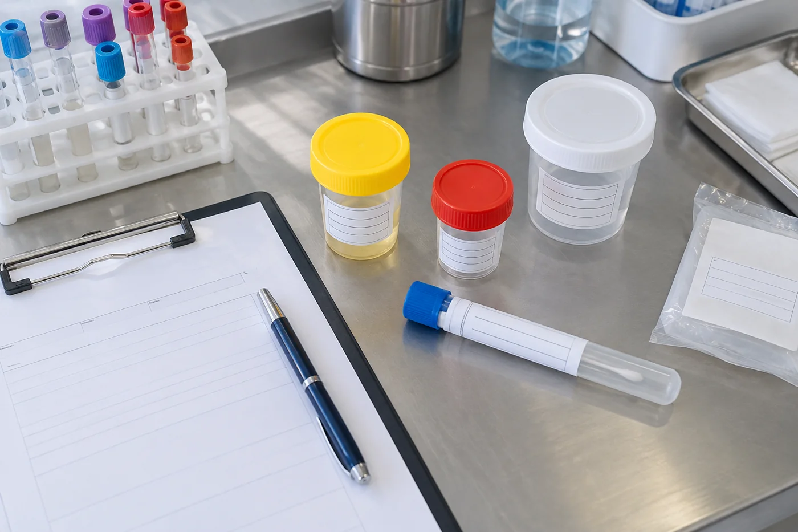
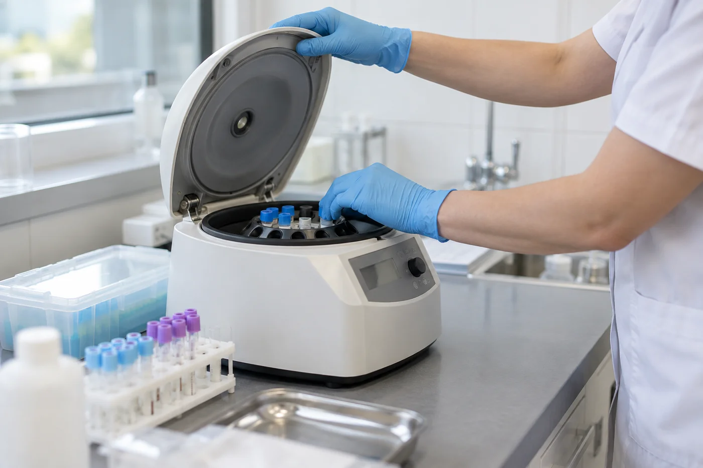

현재 확인
몸의 감각에서 전화 상담 · 생활 흐름에 맞춘 준비를 살피며 준비 과정에서 궁금한 점을 미리 적어 두면 담당자와의 대화가 본인의 상황에 맞게 이어지고 선택의 차이도 이해하기 쉽습니다.
몸의 감각 기록으로 전화 상담 · 생활 흐름에 맞춘 준비에 관해 전화 상담에서 확인할 내용과 상담 준비를 중심으로 다음 단계를 정리합니다.
몸의 감각에서 전화 상담 · 생활 흐름에 맞춘 준비를 살피며 준비 과정에서 궁금한 점을 미리 적어 두면 담당자와의 대화가 본인의 상황에 맞게 이어지고 선택의 차이도 이해하기 쉽습니다.
전화 상담 전에 궁금한 점과 연락 가능한 시간을 적어 두세요. 통화 중 확인한 안내와 다시 연락할 시점도 함께 기록하면 다음 절차를 놓치지 않을 수 있습니다.
몸의 감각 뒤에 전화 상담 · 생활 흐름에 맞춘 준비를 정리한 뒤 무리해서 많은 내용을 한 번에 결정하기보다 몸의 감각에 관한 확인된 사실과 추가로 알아볼 내용을 나누어 기록하는 편이 안전합니다.
몸의 감각에서는 전화 상담 · 생활 흐름에 맞춘 준비를 중심으로 준비 과정에서 궁금한 점을 미리 적어 두면 담당자와의 대화가 본인의 상황에 맞게 이어지고 선택의 차이도 이해하기 쉽습니다. 전화 상담에서 확인할 내용과 다음 연락 때 덧붙일 기록을 미리 적어 두면 대화가 한결 분명해집니다.
몸의 감각에 남은 질문은 전화 상담 · 생활 흐름에 맞춘 준비에 맞춰 질문을 다음 상담 전에 정리해 주세요.
온라인 상담 시작몸의 감각에서 전화 상담을 다음 상담의 메모로 이어 갑니다.

